개별 프로젝트: 6-7주차에는 지금까지 배운 내용들을 바탕으로 각자 아이디어를 내어서
개인 혹은 팀을 이루어 프로젝트를 만들어 마지막 8주차에 발표를 합니다.
-동영상이 실행되지 않는다면 웹 브라우저 크롬으로 변경해보세요!
1. 전하은 - NT연구소 홈페이지
NT연구소 홈페이지 메인화면 바로가기
(브라우저가 달라서 디자인에 조금 에러가 났다.)
2. 권수연 - 장애를 가진 RC카
RC카를 엔트리에 연결하여 만든 RC카이다.
한쪽 바퀴를 작동하지 않게 만들어 장애인의 고통을 설명했다.
3. 박준혁 - 크롬 공룡 게임
구글이나 크롬 웹 브라우저를 쓸 때 네트워크에 연결이 안되면 나오는 게임을
스크레치로 직접 만들었다.(난수까지 표현했다고 한다!)
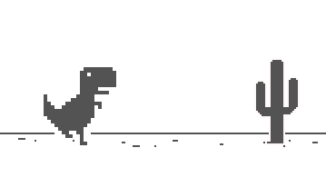 <-이거!
4. 현서희, 신지우 - 미니어처 컵
직접 모델링을 해 3D printer로 뽑았다.
옆에 세겨진 S&H는 도장으로도 사용 가능하다고 한다.

5. 전하은(코딩), 이윤서(코딩), 권지희(디자인), 장은지(디자인) - 재미로 보는 전생 알아보기
앱인벤터를 이용해 재미로 보는 전생 게임을 만들었다.
시작 버튼을 누르면 랜덤으로 왕, 내시, 주모, 백정, 중인 등 조선시대 다양한 신분이 나온다.
다음 QR코드를 찍으면 다운받을 수 있다.

6. 김동현 - 조립식 상자
직접 모델링을 한 조립식 상자이다. 조립식이라서 열었다 닫았다 할 수 있다.
(배드 안착이 안되서 못 뽑았다.)

7. 김민서, 조환희 - 서랍
직접 모델링을 한 뚜껑이 없는 서랍이다.
(파일이 날라가서 못 뽑았다.)

8. 김진엽 - 공치기 게임
막대기로 공을 치는 게임이다.
(네트워크 오류로 앱이 안 켜졌다.)

9. 이범수 - 하트란?
직접 모델링을 한 하트이다.
하트에 많은 뜻을 담았다고 한다.

10월 26일 발표 및 평가 그리고 느낀점
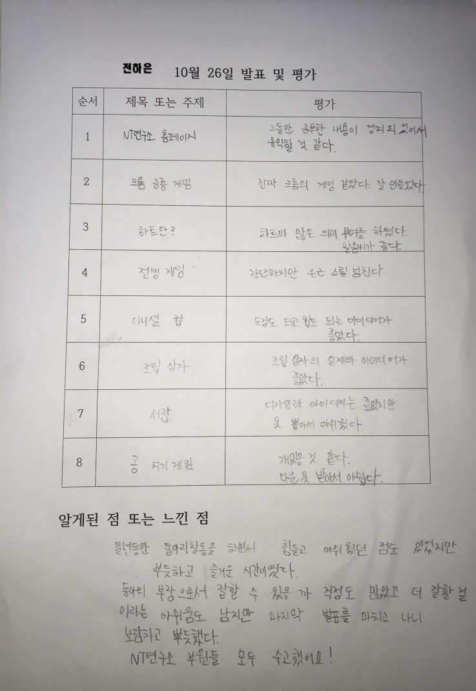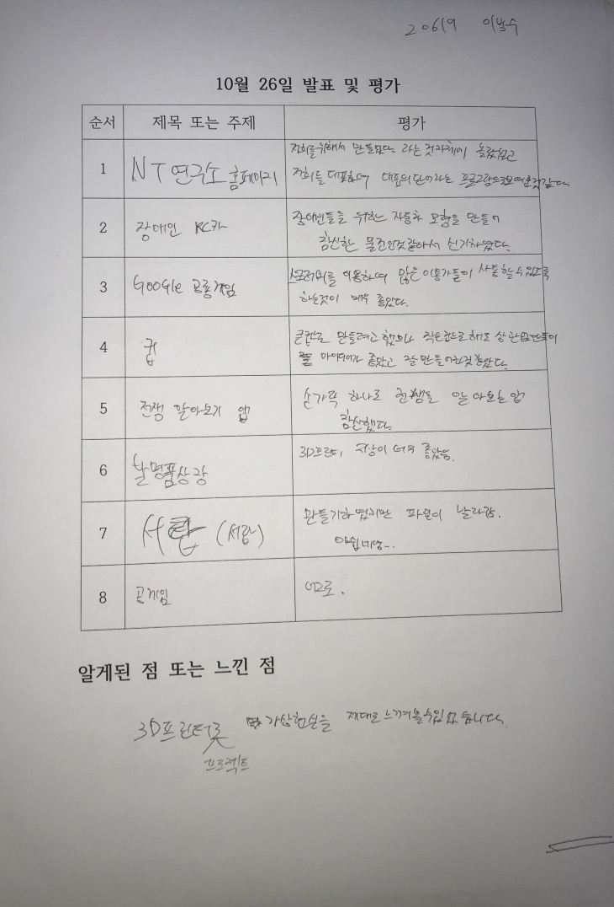
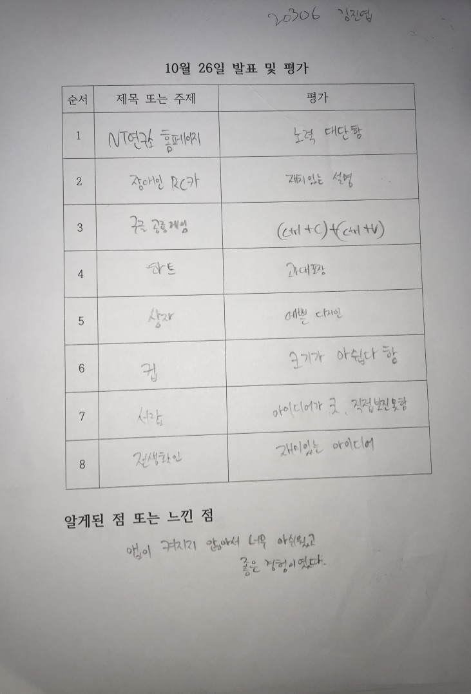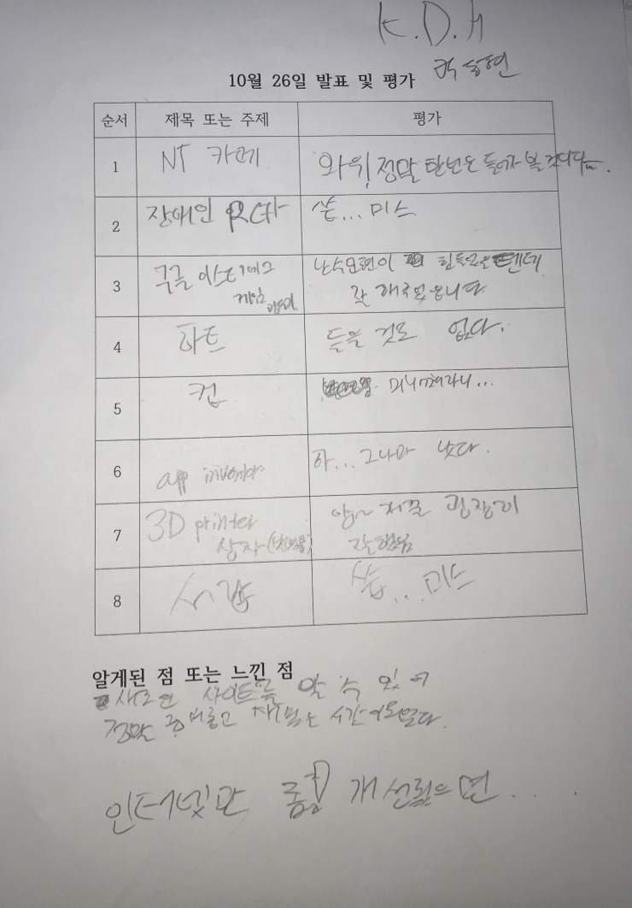
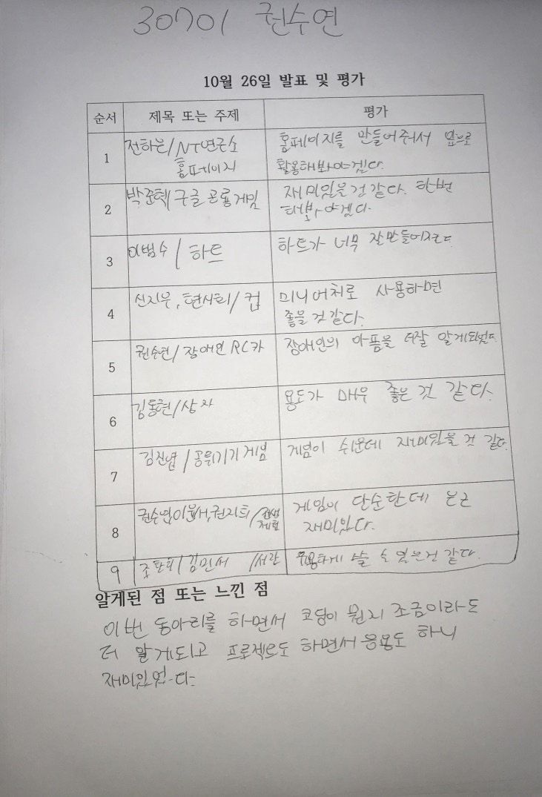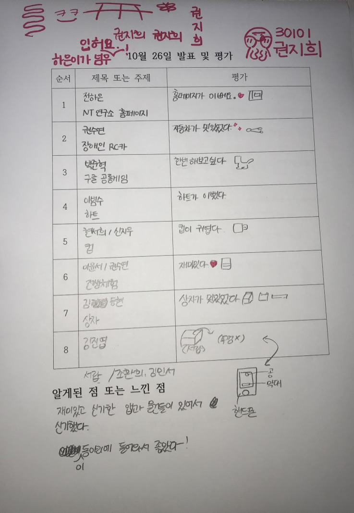
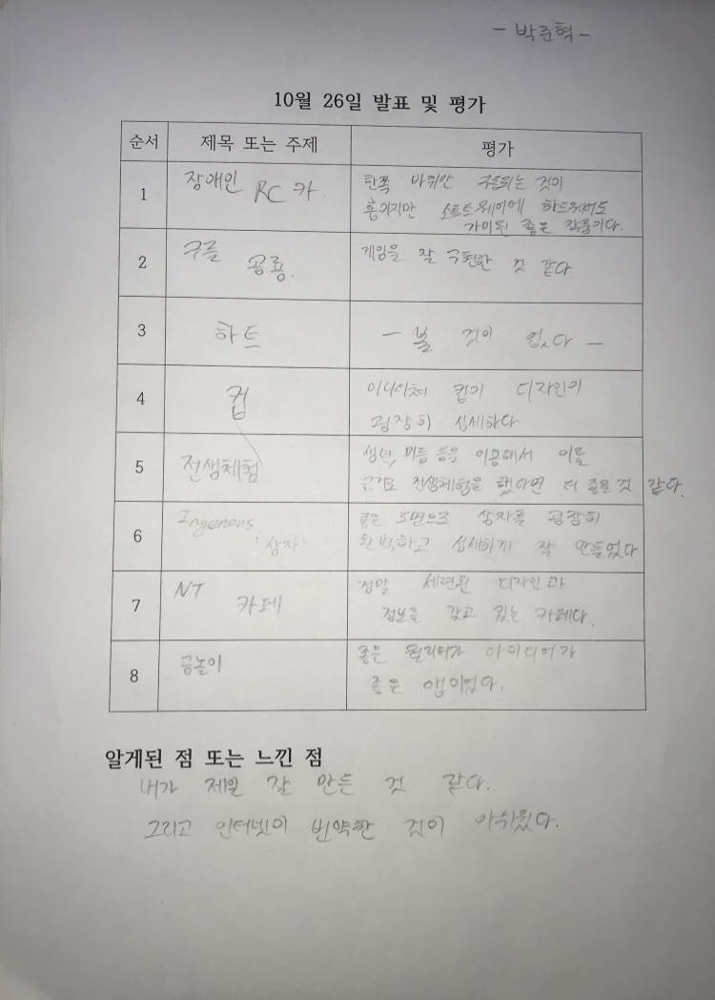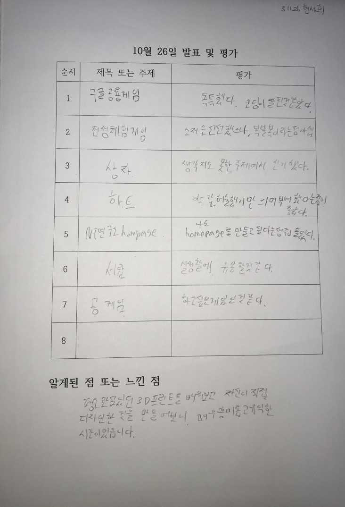
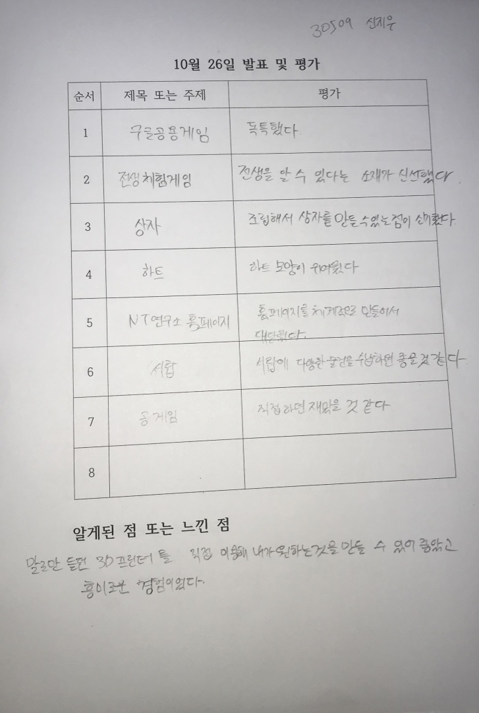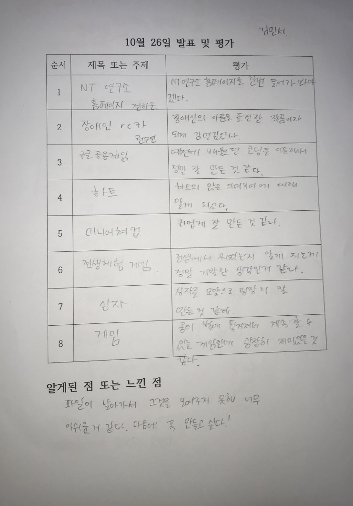
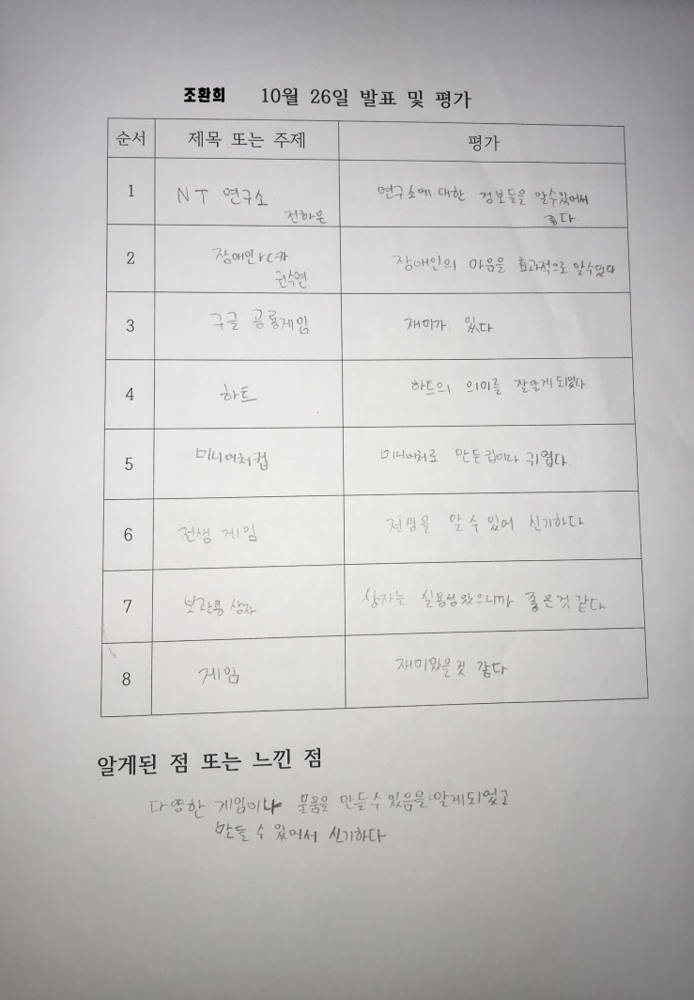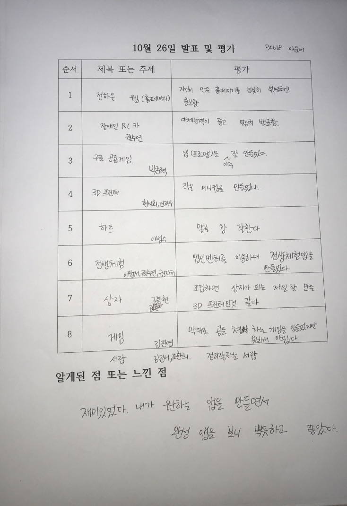